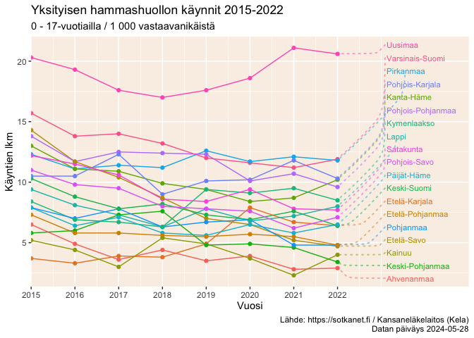

R package to access and manipulate data from the Sotkanet demographics indicator database. The Sotkanet data portal provides over 2000 demographic indicators across Finland and Europe, and is maintained by the National Institute for Health and Welfare (THL). For more information, see data description.
Installation
You can install the stable release version from CRAN:
Alternatively, you can install the development version of sotkanet package from GitHub with:
Development version can be also installed using the r-universe:
Using the package
Load the package in R:
List available indicators in the Sotkanet data portal:
# Pre-defined list of indicators to save bandwidth
sotkanet.indicators <- sotkanet_indicators(c(4,5,6,7,46,74))
head(sotkanet.indicators$indicator.title)
#> [1] "Mielenterveyden häiriöihin sairaalahoitoa saaneet 0 - 17-vuotiaat / 1 000 vastaavan ikäistä"
#> [2] "Toimeentulotukea saaneet 25 - 64-vuotiaat, % vastaavan ikäisestä väestöstä"
#> [3] "Somaattisen erikoissairaanhoidon vuodeosastohoitopäivät 75 vuotta täyttäneillä / 1 000 vastaavan ikäistä"
#> [4] "0 - 6-vuotiaat, % väestöstä"
#> [5] "0 - 6-vuotiaat, % väestöstä, väestöennuste 2060"
#> [6] "Yhden vanhemman perheet, % lapsiperheistä"Here is an example of data retrieval and visualization, using indicator describing private dental care use among 0-17 years old in 2015-2022.
library(ggplot2)
library(ggrepel)
hammashoito <- get_sotkanet(indicators = 1075, years = 2015:2022, genders = "total", region.category = "MAAKUNTA")
# Indicator title tells what this indicator is about
unique(hammashoito$indicator.title)
#> [1] "Yksityisen hammashuollon käynnit 0 - 17-vuotiailla / 1 000 vastaavan ikäistä"
# Some data has to be retrieved separately
hammashoito_metadata <- sotkanet_indicator_metadata(id = 1075)
plot_caption <- paste0("Lähde: https://sotkanet.fi / ", hammashoito_metadata$organization$title, "\n",
"Datan päiväys ", hammashoito_metadata$`data-updated`)
plot <- ggplot(hammashoito, aes(x=year, y=primary.value, group=region.title))+
geom_line(aes(color=region.title)) +
geom_point(aes(color=region.title))
plot + labs(title = "Yksityisen hammashuollon käynnit 2015-2022",
subtitle = "0 - 17-vuotiailla / 1 000 vastaavanikäistä",
x = "Vuosi",
y = "Käyntien lkm",
caption = plot_caption,
color = "Maakunta") +
geom_text_repel(
aes(color = region.title, label = ifelse(year == 2022, region.title, NA_character_)),
xlim = c(2023, 2025),
direction = "both",
hjust = 0,
segment.size = .7,
segment.alpha = .5,
segment.linetype = "dotted",
box.padding = .4,
segment.curvature = -0.1,
segment.ncp = 3,
segment.angle = 20,
size = 3)+
theme(legend.position = "none",
panel.background = element_rect(fill = "linen")) +
scale_x_continuous(
expand = c(0, 0),
limits = c(2015, 2025),
breaks = seq(2015, 2022))
For more in-depth examples, see the package vignette or online tutorial page.
Contributing
-
Submit suggestions and bug reports (provide the output of
sessionInfo()andpackageVersion("sotkanet")and preferably provide a reproducible example) - Send a pull request
- Star us on the Github page
- See our website for additional contact information
Acknowledgements
Kindly cite this work as follows: Leo Lahti, Einari Happonen, Juuso Parkkinen, Joona Lehtomaki, Vesa Saaristo, Aleksi Lahtinen and Pyry Kantanen (rOpenGov 2024). sotkanet: Sotkanet Open Data Access and Analysis. R package version 0.9.80. URL: https://github.com/rOpenGov/sotkanet
We are grateful to all contributors, and for the Sotkanet Statistics and Indicator Bank! This project is part of rOpenGov.